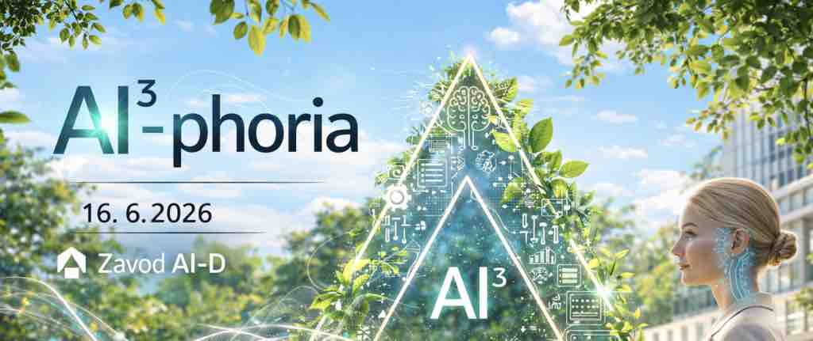
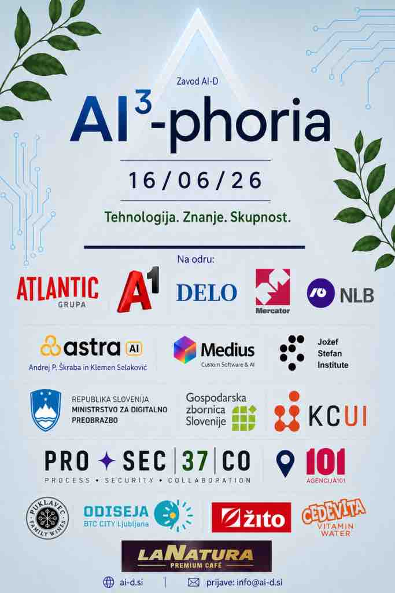

AI³-phoria Summer Meet-Up 2026

V torek, 16. junija 2026, velja pravilo: Tehnologija. Znanje. Skupnost. Dobrodošli na najbolj vročem AI meet-upu tega poletja.
Kaj se zgodi, ko se srečajo največji AI umi, podjetja in prihodnost gospodarstva?
Evforija. AI-phoria. Na kubik: AI³-phoria.
📍 Agencija 101, Gogalova ulica 1, Ljubljana (nekdanja Mercatorjeva stavba)
🕜 16/06/26, ob 12.30
🍷 Networking & afterparty do poznega popoldneva
PRIJAVE IN CENA
📩 Prijave: info@ai-d.si
🎟️ Cena: 150 €
✨ Za člane brezplačno
PROGRAM DOGODKA
12.30 — Registracija, welcome drink & prvi AI networking
Vrata odpremo ob 12.30. Že pred začetkom uradnega programa bo prostor poln podjetnikov, founderjev, marketingašev, developerjev, direktorjev in AI entuziastov, ki jih zanima, kako umetna inteligenca dejansko spreminja biznis in kako ostati na na vrhu.
OTVORITEV DOGODKA
13.00 — Slovenija na AI prelomnici
dr. Polona Pičman Štefančič & Marko Štefančič
Oder bosta otvorila ena najpomembnejših glasov slovenske AI prihodnosti.
Dr. Polona Pičman Štefančič, ena vodilnih strokovnjakinj za pravne, etične in regulatorne vidike umetne inteligence v Sloveniji, bo govorila o največji napaki podjetij danes: AI uvajajo prehitro, brez strategije, brez procesov in brez razumevanja posledic. / MINISTRSTVO ZA DIGITALNO PREOBRAZBO
Odgovorila bo na vprašanja:
- Kaj čaka slovenska podjetja pod novo evropsko AI regulativo?
- Kdo bo zmagovalec nove AI ekonomije?
- Zakaj bodo podjetja brez AI strategije v naslednjih letih postala nekonkurenčna?
Marko Štefančič (KOMPETENČNI CENTER ZA UMETNO INTELIGENCO & GOSPODARSKA ZBRONICA SLOVENIJE) pa bo predstavil realno stanje umetne inteligence v slovenskem gospodarstvu:
- kje Slovenija trenutno zaostaja,
- kje presenetljivo prednjači,
- in zakaj bo naslednjih 24 mesecev odločilnih za konkurenčnost slovenskih podjetij.
To ne bo »AI hype« predavanje, ampak realen pogled v prihodnost slovenskega gospodarstva.
GLAVNO PREDAVANJE
13.30 — Kako bo umetna inteligenca spremenila svet hitreje, kot smo pripravljeni priznati
Marko Grobelnik (Inštitut Jožef Stefan)
Na oder prihaja eden največjih raziskovalcev umetne inteligence in strojnega učenja v Sloveniji, član strokovnega sveta Zavoda AI-D in predvsem človek, ki AI spremlja že desetletja — dolgo preden je postal mainstream.
Marko Grobelnik bo v svojem predavanju predstavil, zakaj umetna inteligenca ni več »tehnološki trend«, ampak največji civilizacijski premik našega časa.
Poudaril bo, da se razvoj umetne inteligence odvija eksponentno — hitreje kot razvoj interneta — zato sprememb ne doživljamo več postopoma, ampak skoraj čez noč.
Po njegovem trenutno živimo sredi tehnološke revolucije, ki bo v naslednjih treh letih močno preoblikovala trg dela, izobraževanje, podjetništvo in družbo kot celoto.
Če želite razumeti, kaj prihaja v naslednjih petih letih — ne samo na LinkedInu, ampak v realnosti — tega predavanja ne smete zamuditi.
AI BEYOND LLMs
14.00 — Ko AI postane fizičen: nova era je tu
Bojan Miličič (Medius)
Medtem ko večina podjetij o umetni inteligenci še vedno govori, jo najbolj napredna podjetja že uporabljajo za optimizacijo procesov, večjo produktivnost in konkurenčno prednost.
Govorec bo skozi konkretne primere iz industrij automotive, bele tehnike in plastične industrije pokazal, kako AI dejansko deluje v proizvodnem okolju. Predstavil bo resnične AI implementacije podjetij Volvo Group, SKF in Gorenje ter prikazal:
– kako podjetja uporabljajo podatke za optimizacijo proizvodnje,
– kateri AI use case projekti danes prinašajo največjo dodano vrednost,
– in kako lahko podjetja AI rešitve začnejo uvajati že danes.
Predavanje prinaša redek vpogled v konkretne AI projekte iz industrije in prihodnost pametne proizvodnje; služilo pa bo tudi reality check-u, kako daleč smo že z AI v fizičnem svetu.
Bojan Miličić je magister znanosti, Director of Sales | AI & Data Solutions.
KRATKA PAVZA
15-minutna pavza bo namenjena nabiranju vitamina D na sončni in zeleni terasi Agencije 101.
Ob tem bomo uživali ob kavici, svežem vinu in odličnih prigrizkih.
Q&A SESSION
14.45 — »Vprašaj karkoli«
Klemen Selakovič & Andrej Škraba LIVE
Na oder prihajata dva najbolj prepoznavna obraza slovenske AI scene:
- Klemen Selakovič
- Andrej Škraba
Klemen Selakovič že leta odpira največja vprašanja tehnologije, družbe in prihodnosti skozi svoje podcaste in intervjuje in je soustanovitelj projekta Astra AI.
Andrej Škraba kot soustanovitelj projekta Astra AI podira rekorde v dosegu, rasti in popularizaciji umetne inteligence med Slovenci.
To ne bo klasičen intervju. To bo odprt Q&A session brez filtrov.
Publika bo lahko vprašanja postavljala v živo.
OKROGLA MIZA
15.15 — Velika podjetja, velike težave, velike rešitve
Za zaključek uradnega dela sledi iskrena debata podjetij, ki umetno inteligenco že implementirajo v realnem svetu.
Na odru bodo:
Rinalda Klemenčič, NLB
Strokovnjakinja za podatke, umetno inteligenco in digitalno transformacijo
Janja Kolenc, A1 Slovenija
Vodja upravljanja izkušnje zaposlenih
Živa Deu, Atlantic Grupa
Vodja digitalne strategije v strateški poslovni enoti namazi
Martin Možina, Mercator
Specialist za UI, podatkovno znanost in implementacijo AI rešitev v poslovne procese
Gregor Knafelc, Delo
Nekdanji odgovorni urednik medijske hiše Delo, danes svetovalec in pomočnik odgovornega urednika
Miha Kranjc, Prosecco 37
Moderator okrogle mize, nekdanji televizijski voditelj in danes del ekipe AI podjetja Prosecco 37
Brez teorije. Brez »AI buzzwordov«. Samo konkretni problemi in konkretne rešitve.
Govorili bomo o:
- zakaj večina AI projektov v velikih podjetjih propade,
- kako implementirati AI brez kaosa — tudi v korporacije,
- optimizaciji procesov in avtomatizaciji,
- kadrovskih izzivih prihodnosti,
- odporu zaposlenih do AI,
- novih poslovnih modelih,
- produktivnosti ekip,
- uporabi AI v prodaji, marketingu in supportu,
- izbiri pravih AI orodij,
- stroških implementacije,
- varnosti podatkov,
- ter kako zgraditi AI strategijo, ki dejansko prinese rezultate.
AFTER HOURS
16.00 — Networking & poletni AI vibe
Ko ugasnemo projektorje, se začne drugi del minglanja.
Druženje ob:
🍷 dobrem vinčku
🍸 osvežilnih pijačah
🍰 sladicah
🎶 glasbi
🤝 networkingu z ljudmi, ki bodo soustvarjali prihodnost slovenskega AI prostora
Najboljše ideje pogosto ne nastanejo na odru, ampak ob kozarcu vina po dogodku.
